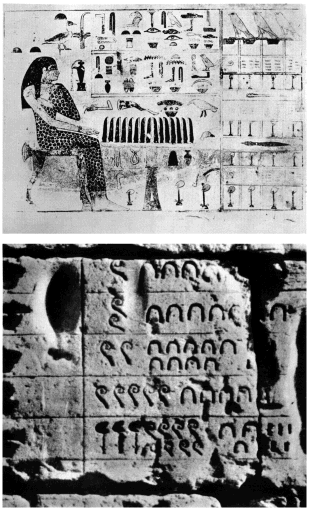
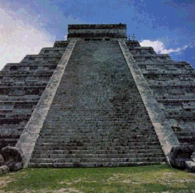
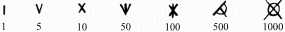
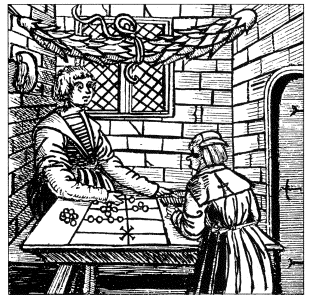
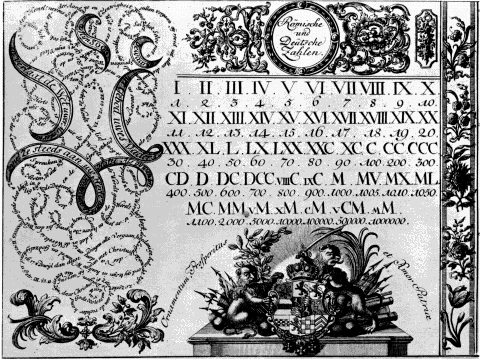
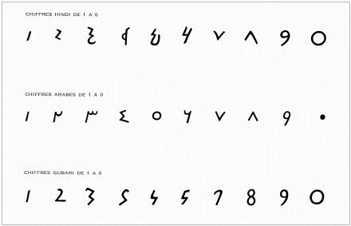

B) La Naissance du chiffre dans les différentes civilisations
|
En Egypte, en l'an
3500 avant notre ère, la notation des chiffres était basée,
comme l'écriture, sur les hiéroglyphes.
Chaque signe possédait une valeur, tel que:
Les chiffres ci-dessous
qui doivent être lus à la fois verticalement et horizontalement,
signifient 1 234 567.
 Au commencement, les mayas se servaient des chiffres pour se rendre compte du temps ; non pas du temps qui chiffre le déroulement historique des faits, mais de celui déterminé par le mouvement des astres. Il est évident que les mayas utilisaient le chiffre et les nombres pour calculer le temps : ce sont eux qui inventèrent le calendrier ; ainsi, les monuments précolombiens étaient bâtis en fonction des chiffres qui symbolisaient les dates : L'édifice de Chichen Itzá, dans lequel était gravé un calendrier, mesure 24 mètres de haut et est divisé en neuf terrasses. Quatre escaliers mènent à son sommet par 365 marches : autant qu'il y a de jours dans l'année solaire.  Les mayas chiffraient les dates de deux manières différentes. L'une, dite période longue, ou haab, convenait au déroulement de la vie quotidienne. Fondée sur le rythme solaire, cette année comportait 18 mois de 20 jours, soit 360 jours. Les cinq jours manquants étaient en quelque sorte exclus du temps puisqu'ils étaient considérés comme impropre à tout travail. L'autre période, dite courte et nommée tzolkin, correspondait à l'année religieuse, le cycle en était de 260 jours. Le système, très compliqué de noms et de nombres attribués à chaque mois et à chaque jour qui présidait à une seconde et plus vaste division du temps déterminait de très longues périodes. Une même date ne réapparaissait qu'après de grands intervalles. En revanche, il existait une autre série de signes étonnamment simples, elle était constituée de points et de traits. Quatre groupes de points symbolisaient les quatre premiers nombres et cinq était représenté par un trait. Ensuite, un mélange de points et de traits amenait le compte jusqu'à 10 inclus. Un coquillage tenait lieu de zéro. Sur les stèles mayas, les nombres sont représentés par des figures de dieux. Treize figures de dieux différentes correspondent aux 13 premiers nombres. Le squelette d'une tête de mort représente le nombre dix. Pour les chiffres entre 13 et 20, les images des dieux représentant 4, 5, etc sont reproduites, mais leurs faces portent sur le menton, la figuration d'un os maxillaire inférieur, symbole de 10. Les nombres supérieurs à 20 sont inscrits très simplement. Ainsi 29 est composé de la glyphe qui correspond à 20 et de celle qui marque 9. Quand 29 représente les jours d'une lunaison, la figure de 20 est celle de la lune. Mais 20 peut être aussi représenté par un drapeau comme chez les Aztèques ou bien par tout autre symbole selon la nature de ce que l'on cherche à énumérer. 400 étant figuré au moyen d'une plume et 800 d'une bourse, c'est donc presque fatalement que l'on peut tenir cette figuration du nombre pour une véritable poétique. Ces signes, en effet, n'étaient, en aucun cas, destinés aux usages domestiques. Pour ces derniers, il semble que les mayas aient utilisés une numérotation décimale et vigésimale (base 20).
Les Romains employèrent la même technique pour représenter graphiquement leurs nombres : I
V X
L C
D M
En réalité, ces graphismes ne sont pas les formes initiales des chiffres de cette numération. Ils ont été précédés en effet par des formes bien plus anciennes n'ayant rien à voir avec des lettres alphabétiques. Ce ne sont en fait que des modifications tardives de formes beaucoup plus vieilles. A l'origine, l'unité était représentée par un trait vertical, la dizaine par une croix, la centaine par une croix coupée par un trait vertical, le nombre 500 par un demi-cercle d'aspect particulier et le millier par un cercle coupé d'une croix :  Ces signes ont évolués pour donner la notation romaine que l'on connait. En fait, les chiffres romains sont non pas des signes servant à effectuer des opérations arithmétiques, mais des abréviations destinées à notifier et à retenir les nombres. Et c'est pourquoi les comptables romains (et les calculateurs européens du Moyen-Age après eux) ont toujours fait appel à des abaques
à jetons pour effectuer des calculs.
 IV
( = 5 -1 ) au lieu de IIII
Mais cette notation commença a se faire difficile lorsqu'il s'agit de compter des nombres dépassant le million. Ce système était de loin le moins efficace pour une lecture rapide des nombres.  Prenant sa source dans
la tradition araméenne,
l'écriture des arabes adopta d'abord un mode de numération
analogue à tous ceux du bassin méditerranéen.
 On sait qu'il y avait
des contacts commerciaux et intellectuels entre les deux civilisations,
qui ont permis aux arabes d'utiliser la notation indienne, qu'ils ont transformés.
Les chiffres arabes sont à l'origine des chiffres utilisés maintenant ; cependant il faut faire une distinction entre les chiffres arabes occidentaux et orientaux. Nos chiffres actuels proviennent des chiffres arabes occidentaux, dits « ghubâr ». Les chiffres des orientaux, dits « hindis », sont tirés directement de la notation indienne, avec cependant des modifications graphiques relativement importantes sur certains chiffres. |